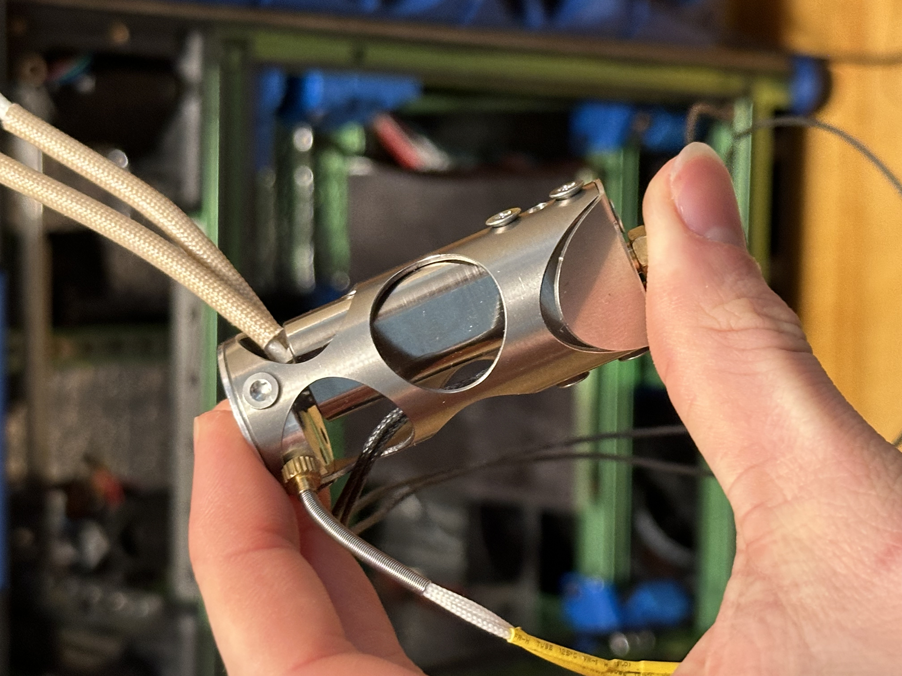

I really enjoy 3d printing both functiopnal and artistic things using my 3d printers. This is a tiger that I designed and printed because I love Tigers
Here is a video of one of my 3d printers printing something functional. I build the 3D printer and designed many of the parts on it
I spend the time to make my printers print as perfectly as I possibly can, sometimes this takes a lot of test prints, sometimes it takes modification to the printer
This is a hotend to a 3D printer that I spent several months beta testing during its developement.
